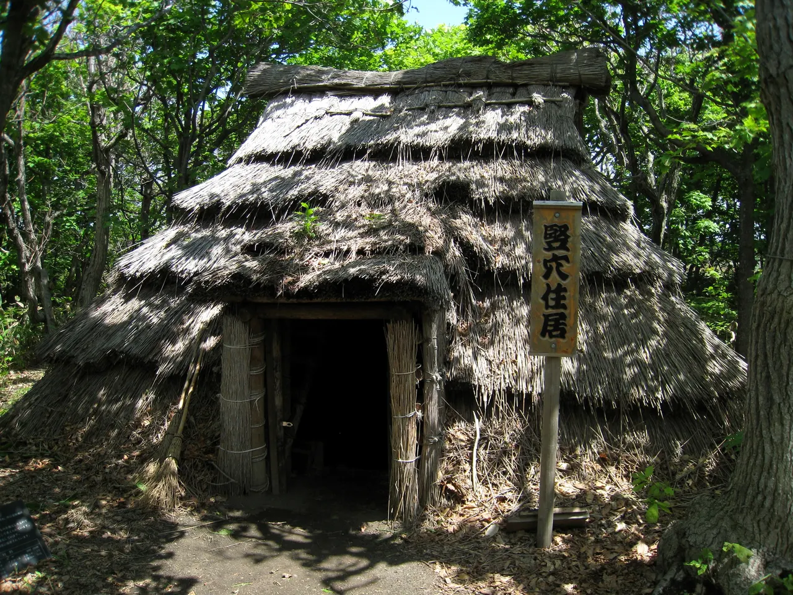
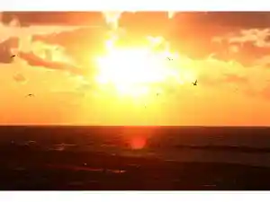
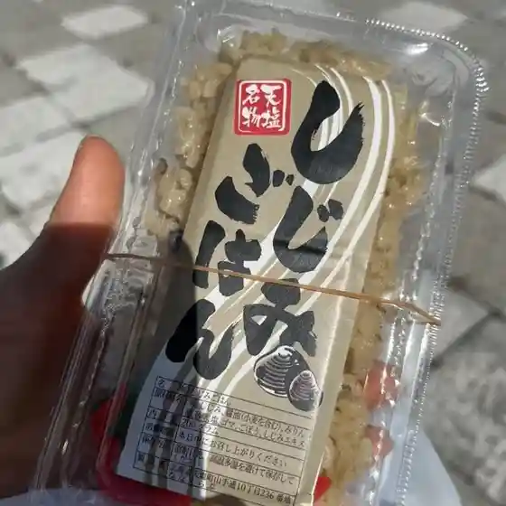
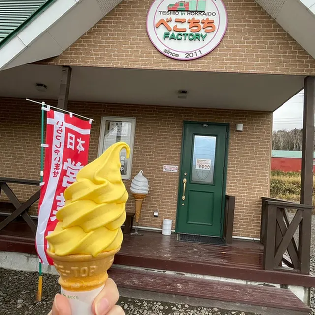
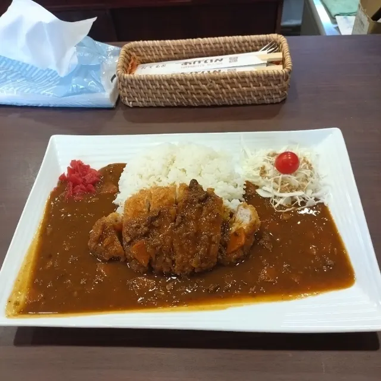
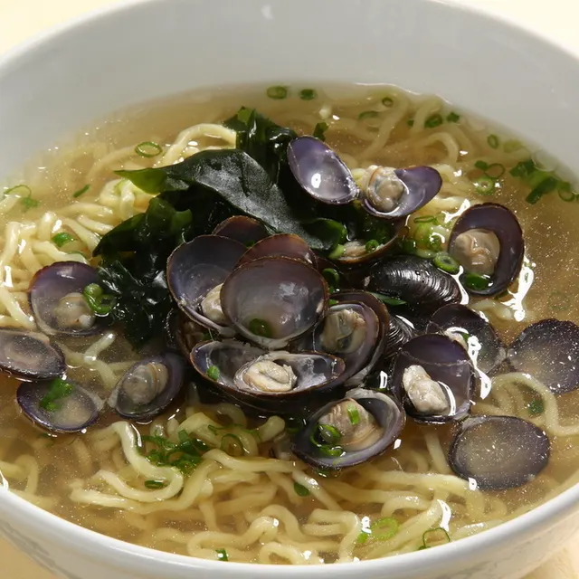
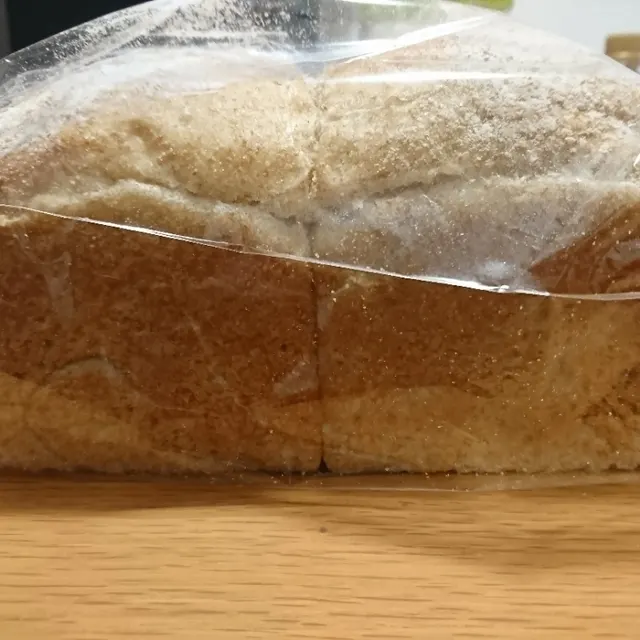
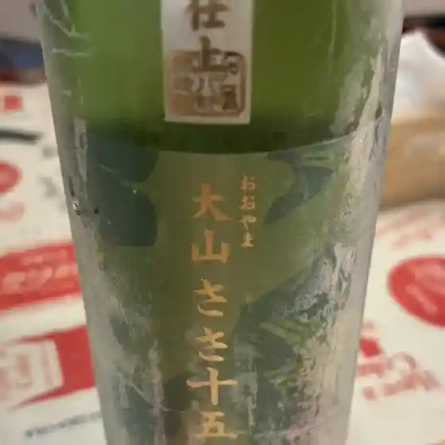

Teshio
Teshio · Hokkaido
Teshio
Highlighted on the Hokkaido map.

Stay
てしお温泉 夕映

Teshio Onsen Yuubae
Dining
道の駅 てしお

Michi No Eki Teshio
べこちちファクトリー

Bekochichi Fakutorii
あげいん

Agein
久末菓子舗

Hisasue Kashi Ho
てしお温泉 夕映 レストラン

Teshio Onsen Yuubae Resutoran
カザレッチオ

Kazaretchio
居酒屋はまなす

Izakaya Hamanasu
大野菓子舗

Oono Kashi Ho
宇野牧場
Uno Bokujou
南花園
Naka Sono
ドライブイン てしお
Doraibuin Teshio
力
Chikara
空海
Kuukai
たつみ
Tatsumi
セイコーマート あかつか天塩店
Seikoomaato Akatsuka Teshio Mise
ウノカフェ
Unokafe
道の駅 てしお レストラン
Michi No Eki Teshio Resutoran
さとう民宿
Satou Minshuku
アルファマート天塩
Arufamaato Teshio
桜新町
Sakurashinmachi
宴家 ふく助
Utage Ie Fuku Jo
DCM ニコット 天塩店
Dcm Nikotto Teshio Mise
天塩港市場 銀恵水産
Teshio Koushi Ba Gin Megumi Suisan